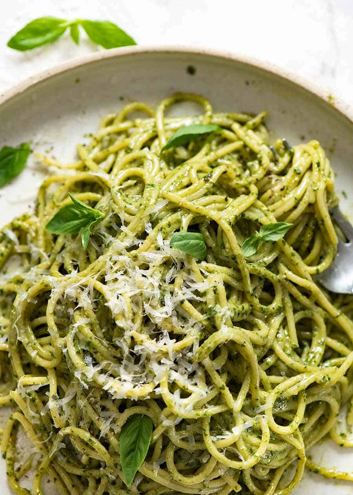

pesto pasta

Description
Impressive meals don't have to take hours and hours in the kitchen.
Take this beautiful pesto pasta, for example, which is ready in just 30 minutes! You only need
a handful of ingredients to make the fresh, from-scratch pesto.
Ingredients
- 1 cup firmly packed fresh basil leaves
- 1/3 cup grated Parmesan cheese
- 1/4 cup olive oil
- 1 clove garlic
- 2 tablespoons sliced almonds, toasted
Steps
- In blender or food processor, place Pesto ingredients.
- Cover and process on medium speed about 3 minutes, stopping occasionally to scrape down sides
with rubber spatula, until smooth. Set aside.
- In 4-quart saucepan, heat penne and broth just to boiling over high heat.
Reduce heat to medium; cover and cook 8 to 10 minutes, stirring frequently, until al dente and liquid is almost absorbed. Remove from heat. Add pesto; stir in chicken and tomatoes; cook over medium 2 to 3 minutes or until thoroughly heated.
- Garnish with basil and 3 tablespoons Parmesan cheese.